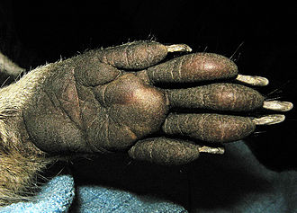

Енот-полоскун, или американский енот (лат. Procyon lotor), — хищное млекопитающее рода еноты семейства енотовых.Один из немногих видов,
которые процветают в условиях усиления антропогенного воздействия, выражающегося в постепенном окультурировании угодий. Енот хорошо
риживается в местах интродукции, хотя и является в целом теплолюбивым видом. На территории России вид хорошо освоил западные
(причерноморские) и восточные (прикаспийские) регионы Северного Кавказа, где превратился в опасный инвазионный вид, угрожающий местной
флоре и фауне. B Белоруссии хорошо прижился в Полесье. Енот легко приручается и подходит для разведения в неволе.
Внешний вид
Подошва передней лапы-ладони енота
Енот-полоскун ростом с кошку. Длина тела 45—60 см, хвоста 20—25 см; масса 5—9 кг. Лапы короткие, с
настолько развитыми пальцами, что следы похожи на отпечаток человеческой ладони. Енот может передними
лапами захватывать и удерживать предметы, в том числе и мыть еду. Высокая чувствительность лап заменяет
дальнозоркому еноту зрение вблизи. Мех у енота густой, коричневато-серый.